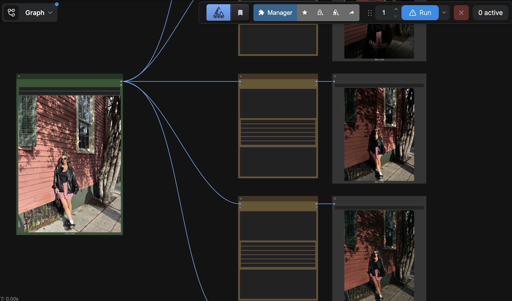

ComfyUI · NanoBanana · Image Editing · Lighting Exploration

A reusable ComfyUI workflow powered by NanoBanana for rapid image relighting and lighting exploration. The workflow takes a single source image and generates multiple lighting variations through prompt-driven relighting, enabling fast iteration on mood, atmosphere, and visual style while preserving the original subject, composition, and scene structure.
Designed as a production-ready template, the system allows creators to explore a wide range of lighting conditions including golden hour, cinematic night lighting, studio lighting, dramatic contrast, soft overcast lighting, and stylized color treatments from a single image input.
Workflow Design
The workflow streamlines look development and creative direction by reducing the time required to manually create lighting variations. Rather than re-shooting or manually compositing light sources in post, the system uses prompt orchestration to drive relighting from a single input image. The result is a fast, non-destructive iteration loop suited to concept development, storyboarding, marketing assets, and AI-assisted content production.
For the reference subject I used my own face deliberately. Facial identity is the hardest thing for a relighting model to get right — small shifts in skin tone, shadow placement, or highlight intensity are immediately legible to any viewer in a way that abstract scenes are not. Using a known face as the test subject made it possible to detect the slightest variations in output quality: whether the model was truly relighting the existing structure or subtly reconstructing facial features, and whether identity was being preserved or quietly drifting across lighting conditions.
Built as a reusable template, the workflow accepts any source image and requires only a prompt change to generate a new lighting scenario. Identity and composition are preserved across all variations, so creative teams can explore the full lighting space of a shot without re-generating or losing the underlying asset.